听从各位朋友们的建议，分直辖市/省/自治区单独发帖，多个省份机场交通放在一篇文章中查找是不方便。
并分别设置关键词自动回复，本文关键词“江苏交通”，公众号发送“江苏交通”即可看到。
A——市区机场巴士，市区/县城城区机场巴士。部分机场巴士可刷公交卡，部分机场巴士支持交通联合一卡通、支付宝乘车码、微信乘车码、银联乘车码、银行卡闪付等方式乘车。
B——机场公交，经停多个站点，大都可刷公交卡，很多城市机场公交支持交通联合一卡通、支付宝乘车码、微信乘车码、银联乘车码、银行卡闪付等方式乘车。
部分城市机场巴士与机场公交专线无区分，随意划分到A或B。
C——城际班车，包括城际/省际机场巴士、长途汽车、定制专线等，以及县城机场发往县城周边班车。
D——城市轨道交通，包括地铁、轻轨、跨座式单轨、市域快轨、磁浮系统、有轨电车等。
E——铁路交通，C/D/G开头的动车组旅客列车，可以在铁路12306查询购票。
除了A、B、C、D、E这五类公共交通外，各机场都有出租车，少数机场有网约车。
另很多机场周边酒店会提供免费接送机服务，少数距离机场较远的酒店也提供免费接送机服务。上海浦东机场周边多家距离10公里以上的酒店提供免费接送机服务，贵阳一家距离机场30多公里远的亚朵酒店提供免费接送机服务。
极少数机场官方微信公众号才可以查询到正确的机场公共交通！！！
极少数机场客服电话工作人员才能告知准确的机场交通！！！
另外不建议到航旅纵横/机场行/飞常准/航班管家四款航服APP查询机场交通信息，这四款航服APP上机场交通信息基本都是几年之前的信息，错误太多，并且大多数机场交通信息为零。
本文各机场公共交通时间都是2024年夏秋季运营时间。
各地机场地铁、公交线路大都只写首末站和中途经停主要站（火车站、汽车站），各城市地铁/公交经停站、时间、票价、详细站点等信息仅供参考，请自行百度/高德/腾讯地图查询（百度、高德、腾讯有时也不准确）或是拨打当地地铁/公交公司电话咨询。
受不确定因素（包括但不限于大雨、大雪、沙尘暴、雾霾等天气因素）影响，部分城市机场巴士/机场公交/城市轨道交通线路、站点、时刻、票价可能会发生变动调整，相关信息以各机场当天实际情况为准。
关于更新：
各机场公共交通有小调整时，会在文末留言并置顶。
航班换季机场交通大调整时，会重新发文更新。
更新不一定群发通知，在公众号发送“江苏交通”就可以看到自动回复的最新内容。
特别提示：
各地机场巴士咨询电话，手机号码大都为调度、司机、售票员个人手机号码，未标注问询时间的，请于当地上班时间时段内拨打，谢谢！！！
新疆地区大都10:00上班，14:00-16:00为午休时间。
新疆各地有机场巴士的支线机场，机场巴士（非6座8座商务车）大都根据外地进出疆航班时间以及乌鲁木齐到发航班时间安排发车，很少为疆内支线航班单独安排发车。
疆内各地支线机场间航班大都是小飞机执飞旅客大多数时候都不多，我乘坐过的疆内支线航班10位旅客、11位旅客的情况都遇到过，还有一次在一个支线机场，当天只有我一位出港旅客。
个人精力有限，如有差错纰漏烦请各位指正！！！
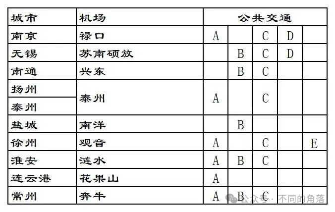
1、南京禄口机场
A：市区机场巴士，目前有3条线路，2号线河西万达广场发车第二班起经停南京南站。
可以在“南京机场空港快线”微信公众号查询线路信息，具体发车信息已当天公布为准。
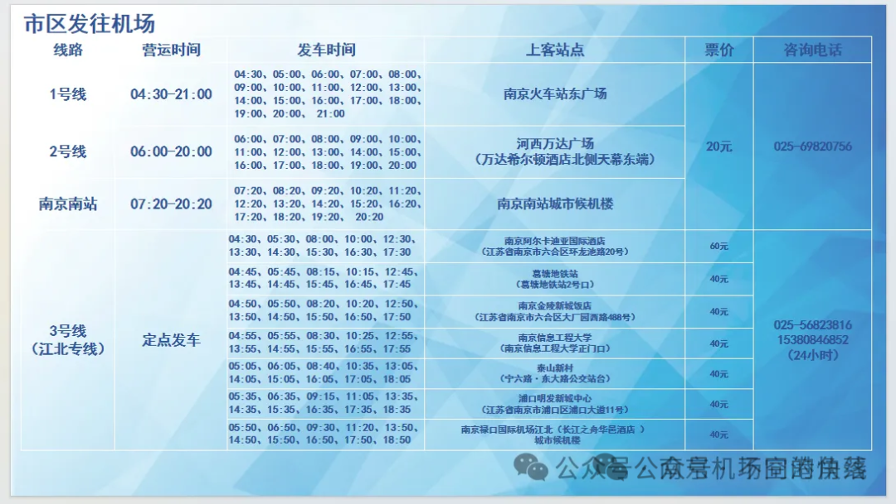
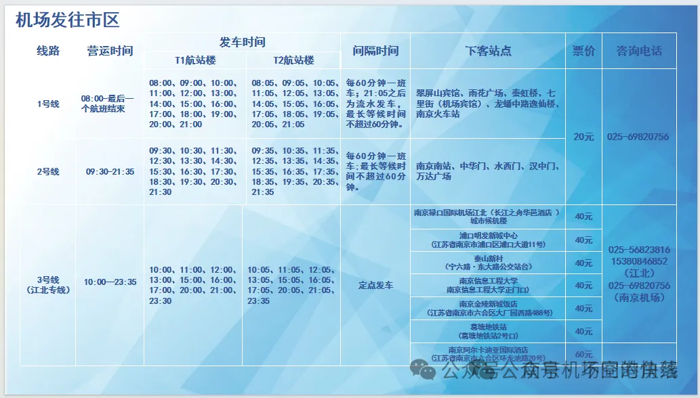
C：城际班车，有从南京禄口机场发往沐阳、淮安、泰州、泰兴、靖江、扬州、仪征、江都、高邮、宝应、镇江、句容、丹阳、扬中、常州、金坛、溧阳、宜兴、江阴等江苏省内城市和安徽省芜湖、滁州、天长、马鞍山、来安等城市。
可以在“南京机场空港快线”微信公众号查询线路信息，具体发车信息已当天公布为准。
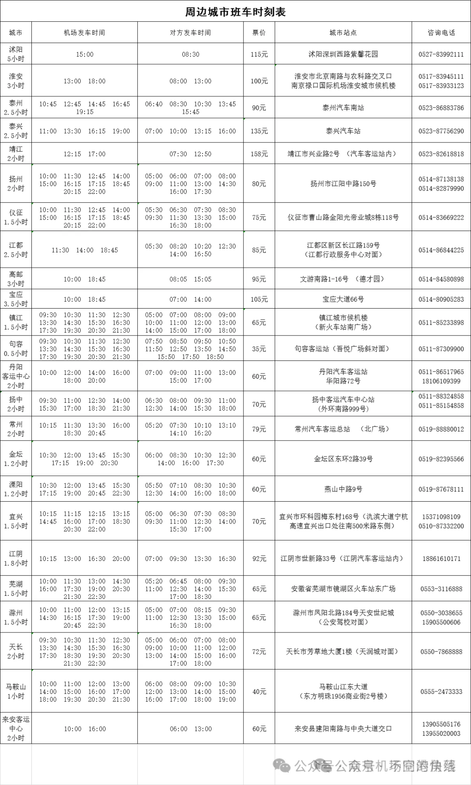
D：地铁S1线，票价2-7元。
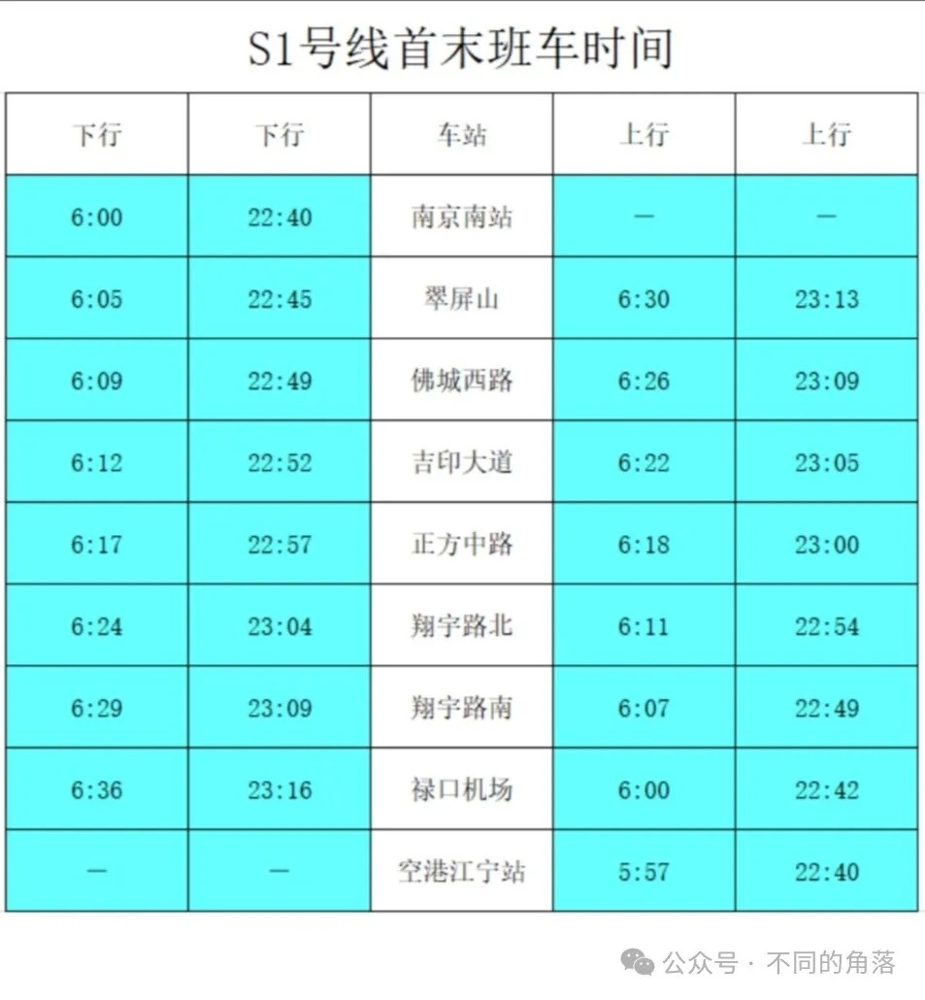
2、无锡硕放机场
B：无锡市区公交773路，城际公交苏锡公交1号线。
773路，票价2元。
工博园枢纽→无锡硕放机场，
发车时间：6:00-18:00；
航达路(无锡硕放机场)→无锡硕放机场→工博园枢纽，
发车时间：6:00-18:00。
苏锡公交1号线，票价2元。
沪宁城铁新区站(苏州)→无锡硕放机场，
发车时间：6:30-17:30；
无锡硕放机场→沪宁城铁新区站，
发车时间：6:30-17:30。
C：城际班车，有苏州、常熟、靖江、张家港、宜兴、江阴等江苏省内线路。
可以到“无锡客运”微信公众号、“苏汽直通车”微信公众号或“巴士管家”小程序查询购票。
咨询电话：0510-82588188。
机场↔常熟，票价55元。
常熟南站→无锡硕放机场，
发车时间：8:58-18:00。
无锡硕放机场→常熟南站，
发车时间：9:30-20:00。
常熟北站→无锡硕放机场，
发车时间：9:55。
无锡硕放机场→常熟北站，
发车时间：17:20-20:00。
机场↔靖江，票价90元。
靖江汽车站→无锡硕放机场，
发车时间：5:55-16:45。
无锡硕放机场→常熟南站，
发车时间：10:00-19:20。
机场↔张家港，票价65元。
张家港客运站→无锡硕放机场，
发车时间：7:50-18:30。
无锡硕放机场→张家港客运站，
发车时间：9:20-19:00。
机场↔宜兴，票价65元。
宜兴客运站→无锡硕放机场，
发车时间：7:10、9:30。
无锡硕放机场→宜兴客运站，
发车时间：9:35-16:45。
机场↔江阴周庄，票价50元。
江阴周庄汽车站→无锡硕放机场，
发车时间：6:30-16:00。
无锡硕放机场→无锡东站→顾山→新桥→华士→华西→江阴周庄汽车站，
发车时间：9:10-18:00。
机场↔苏州，票价35-59元。
苏州火车站北广场客运站→无锡硕放机场，
发车时间：8:30-18:00。
无锡硕放机场→苏州火车站北广场客运站，
发车时间：9:10-19:00。
苏州城市航站楼→无锡硕放机场，
发车时间：5:20-20:20。
无锡硕放机场→元和之春公交站→苏州园区(苏州城市航站楼)，
发车时间：10:30-19:40。
苏州高新区城市航站楼→无锡硕放机场，
发车时间：5:00-18:00。
无锡硕放机场→苏州新区(苏州高新区城市航站楼)→团结桥地铁站，
发车时间：11:00-21:40。
无锡硕放机场→苏州西环路地铁站→团结桥地铁站→金库桥地铁站，
发车时间：21:00。
无锡硕放机场→苏州火车站，
发车时间：22:30。
D：地铁3号线，票价2-6元。
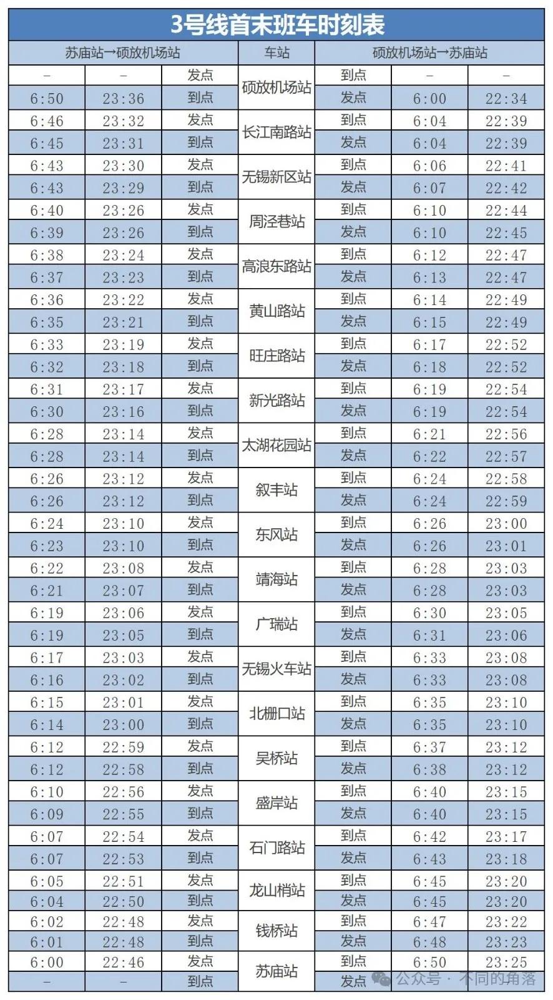
3、南通兴东机场
B：公交D23路、213路、611路、622路、633路、677路、803路。
咨询电话：0513-85896196(D23)，
咨询电话：0513-86513102(213)，
咨询电话：0513-83519379(其它)。
D23路，票价2元。
灰堆坝(内)→南通机场，
发车时间：7:00-18:00；
南通机场→灰堆坝(内)，
发车时间：8:00-19:00。
213路，票价2元。
兴仁派出所→南通机场→胜利桥公交回车场，
发车时间：6:30-18:40；
胜利桥公交回车场→南通机场→兴仁派出所，
发车时间：5:30-17:40。
611路，票价2元。
校西公交停车场→南通机场→兴东公交回车场，
发车时间：5:30-19:20；
兴东公交回车场→南通机场→校西公交停车场，
发车时间：5:30-19:20。
622路，票价2元。
口腔医院北院→南通机场，
发车时间：8:00、10:30、12:30、13:15、14:30、15:30、16:30；
南通机场→口腔医院北院，
发车时间：10:00-18:00。
633路，票价2元。
海风街桃园路北→南通机场，
发车时间：8:00、9:30、10:20、11:50、13:20、14:50、17:00；
南通机场→海风街桃园路北，
发车时间：9:30、11:00、12:30、14:00、16:00、17:00、18:00。
677路，票价3元。
南通西站→南通机场，
发车时间：9:00、12:00、15:00、18:00；
南通机场→南通西站，
发车时间：10:30、13:30、16:30、19:30。
803路，票价6元。
通州湾汽运中心北→南通机场→南通站，
发车时间：6:30-15:30；
南通站→南通机场→通州湾汽运中心北，
发车时间：8:30-17:30。
C：城际班车，有如皋、海安班车。
机场↔如皋，票价45元。
可以在“巴士管家”小程序、“飞鹤购票”小程序或“南通汽运集团”微信公众号查询购票。
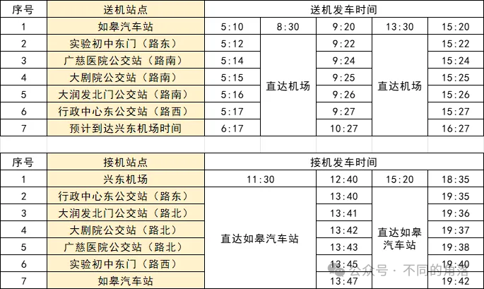
机场↔海安(商务车)，票价50元。
海安汽车站→机场，
发车时间：8:00、13:00。
机场→海安汽车站，
发车时间：10:50、14:50。
4、扬州泰州机场
A：扬州市区机场巴士，票价30元。
目前有东线和西线，可以在“巴士管家”小程序查询预订部分站点班次。
咨询电话：0514-86100777。
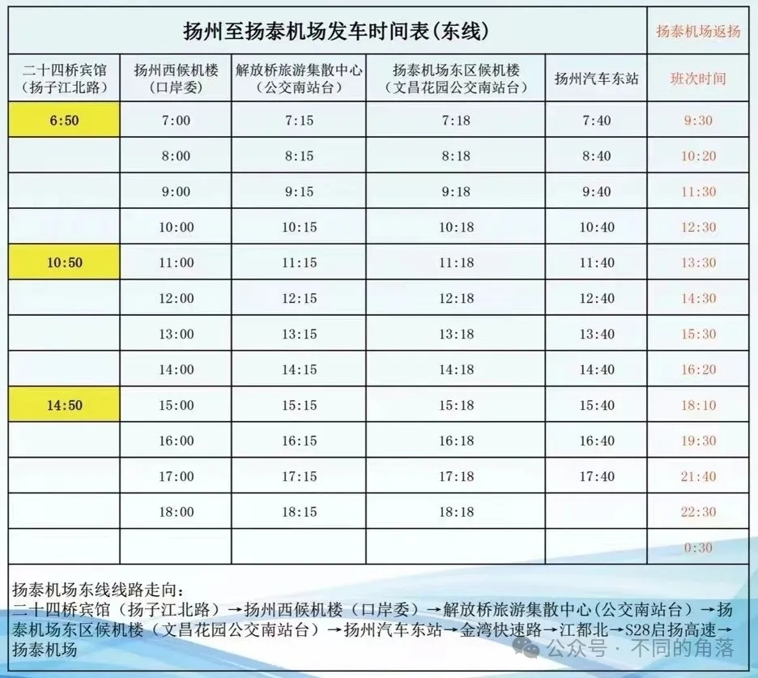
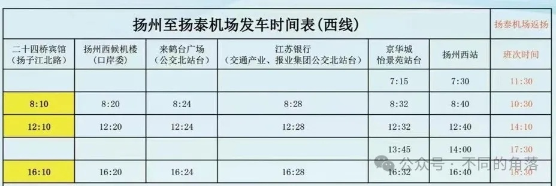
西区候机楼：维扬路252号，
东区候机楼：文昌中路1号运河城市广场3栋。
C：城际班车，有泰州、高邮、姜堰城市候机楼班车。
咨询电话：0523-86050011。
机场↔泰州(大巴车)，票价25元。
泰州候机楼→机场，
发车时间：8:00、10:00、12:00、14:00、16:00、19:30。
机场→泰州候机楼，
发车时间：10:10、12:10、14:10、16:10、18:10、22:30。
机场↔泰州(商务车)，票价50元。
可以上门接送。
泰州候机楼→机场，
发车时间：7:00、9:00、11:00、13:00、15:00、17:00、18:30。
机场→泰州候机楼，
发车时间：9:10、11:10、13:10、15:10、17:10、19:10、20:30。
泰州候机楼：海陵区青年南路2号(泰州汽车客运南站)。
机场↔高邮，票价35元。
高邮候机楼→机场，
发车时间：8:00、11:10、15:30。
机场→高邮候机楼，
发车时间：10:00、13:30、17:30。
高邮候机楼：高邮市海潮路51号。
机场↔姜堰，票价50元。
姜堰候机楼→机场，
发车时间：7:30、9:00、10:00、11:30、13:00、14:30、16:00、18:00、19:30。
机场→姜堰候机楼，
发车时间：9:30、11:00、12:00、13:30、15:00、16:50、19:00、21:30、22:30。
姜堰候机楼：姜堰区人民中路1号(姜堰汽车客运站)。
5、盐城南洋机场
B：公交98路、15路、K203路、夜1路。
咨询电话：0515-69009900。
98路机场专线，票价2元。
市行政中心(西)→盐城南洋国际机场，
发车时间：7:30-21:50。
盐城南洋国际机场→市行政中心(西)，
发车时间：8:00-21:00。
15路，票价1元。
万达广场→盐城南洋机场，
发车时间：6:30-18:30。
盐城南洋机场→万达广场，
发车时间：6:30-18:30。
K203路，票价1-6元。
高铁站西广场→南洋机场→洋马车站，
发车时间：6:30-18:00。
洋马车站→南洋机场→高铁站西广场，
发车时间：6:30-18:00。
夜1路，票价2元。
高铁站西广场→南洋机场，
发车时间：19:00-23:00。
南洋机场→高铁站西广场，
发车时间：19:00-23:00。
6、徐州观音机场
A：目前有徐州汽车总站(徐州火车站)、云龙万达广场(如家精选酒店)、徐州汽车东站(徐州高铁东站)3条线路，单程票价都是25元。
还有市区定制专线，票价40元。
寒暑假放假时，可能会临时开通矿大南湖校区→观音机场单向班车，票价30元。
寒暑假开学时，可能会临时开通观音机场→矿大南湖校区→单向班车，票价30元。
三条固定班线、定制专线、临时班车都可以在“徐州空港巴士”微信公众号查询购票。
咨询电话：0516-83707377。
徐州汽车总站线：
徐州汽车总站→陶瓷市场→汽车南站→观音机场，
发车时间：6:00、6:30、7:00、7:30、8:10、9:00-20:00每小时一班，20:00班次经停徐州高铁东站。
观音机场→汽车南站→陶瓷市场→徐州汽车总站，
发车时间：根据航班到达时间安排发车，有航班进港就有班车。
云龙万达广场线：
云龙万达广场→观音机场，
发车时间：8:10、8:50、9:30、10:30、13:10、15:30、16:30、18:00。
观音机场→云龙万达广场，
发车时间：根据航班到达时间安排发车，有航班进港就有班车。
徐州汽车东站线：
徐州汽车东站→美的广场→观音机场，
发车时间：8:40、9:20、10:00、11:00、12:30、13:40、16:00、17:00、18:30、20:30(徐州汽车总站始发车)。
观音机场→美的广场→徐州汽车东站，
发车时间：根据航班到达时间安排发车，有航班进港就有班车。
徐州市区↔观音机场定制专线：
徐州市区上门接送，票价40元。
预约电话：17327676735(工作时间咨询预约8:30-11:30、15:00-17:30)。
C：城际班车，有江苏省内丰县、沛县、新沂、邳州、宿迁、连云港，山东省枣庄，河南省永城，安徽省淮北、宿迁线路。
都可以在“徐州空港巴士”微信公众号或“巴士管家”小程序查询购票。
咨询电话：0516-83707377。
机场↔丰县，票价70元。
丰县汽车站→观音机场，
发车时间：7:00、13:30。
观音机场→丰县汽车站，
发车时间：10:30、15:30。
机场↔沛县，票价60元。
丰县汽车站→观音机场，
发车：7:00、9:00、14:00、16:30。
观音机场→丰县汽车站，
发车:10:30、13:00、17:30、19:00。
机场↔新沂，票价66元。
新沂汽车站→观音机场，
发车：7:00、10:00、13:00。
观音机场→新沂汽车站，
发车：10:30、13:00、15:00。
机场↔邳州，票价40元。
邳州汽车站→观音机场，
发车：6:30、8:00、11:30、13:00、15:00、17:10。
观音机场→邳州汽车站，
发车：9:30、11:00、13:00、15:00、16:30、18:30。
机场↔宿迁，票价50元。
宿迁汽车站→观音机场，
发车：7:00、8:30、11:00、13:40、16:00。
观音机场→宿迁汽车站，
发车：9:30、11:00、13:00、15:30、18:00。
机场↔连云港，票价120元。
海连西路农工商超市→观音机场，
发车：7:30、9:30、12:00、16:00。
观音机场→海连西路农工商超市，
发车：9:30、11:00、13:00、15:30、18:00。
机场↔枣庄，票价60元。
枣庄薛城高铁站→观音机场，
发车：7:00、9:00、11:00、14:00、16:30。
观音机场→枣庄薛城高铁站，
发车：9:30、11:00、13:00、15:30、18:00。
机场↔永城，票价100元。
永城客运站→观音机场，
发车：7:00、14:00。
观音机场→永城客运站，
发车：10:40、18:00。
机场↔宿州，票价60元。
宿州快客站→观音机场，
发车：6:00、10:00、14:10。
观音机场→宿州快客站，
发车：9:30、13:00、15:00、18:30。
机场↔淮北，票价70元。
淮北客运中心站→观音机场，
发车：6:30、8:00、10:00、12:30、14:00、16:00、18:00、19:30。
观音机场→淮北客运中心站，
发车：10:30、13:00、15:00、18:00、20:00。
D：徐州观音机场坐免费摆渡车至观音机场高铁站，有去往徐州东、南京、扬州、盐城、宿迁、睢宁、泗阳、商丘、郑州东、武汉、长沙南、贵阳北、淮安东、南通西、镇江、高邮、马鞍山东、芜湖、铜陵、池州、安庆、海安、东台、如皋南、常熟、张家港、太仓、上海虹桥等站高铁动车。
每一趟高铁到达，都有摆渡车在站前等候；高铁发车前半小时，观音机场T2航站楼前摆渡车发车。
详细运营时间和票价可以到铁路12306官网/APP查询。
7、淮安涟水机场
A：淮安市区机场巴士，免费乘坐。
咨询电话：0517-81666666-1。
徐州鼎立酒店→翔宇北道·健康路站→淮海中学站→机场，鼎立酒店发车10分钟到翔宇北道·健康路站，20分钟到淮海中学。
发车时间：19:00、21:00，21:00班次根据客流情况发车，不一定每天都有。
机场→淮海中学站→翔宇北道·健康路站→鼎立酒店，
发车时间：20:00、22:00、最后一班航班到达30分钟。
B：公交733路，票价3-4元。
咨询电话：0517-9688996。
北京新村→机场航站楼，
发车时间：6:30-17:30；
机场航站楼→北京新村，
发车时间：8:00-18:50。
C：城际班车，有发往沭阳、宿迁线路。
咨询电话：13815739168。
机场↔沭阳，票价25元。
随车电话：13815739168。
沭阳东站→淮安机场→涟水汽车站，途经马厂镇、沂涛镇、高沟镇、梁岔镇、成集镇、陈师街道到淮安涟水机场，终到涟水汽车站，
发车时间：7:50、14:00；
淮安机场→沭阳东站，
发车时间：10:30(涟水汽车站10:00始发，途经涟水高铁站、涟水机场)、15:20(涟水机场始发，途经涟水高铁站，16:00途经涟水汽车站)。途经陈师街道、成集镇、梁岔镇、高沟镇、沂涛镇、马厂镇终到沭阳汽车客运东站。
机场↔宿迁，票价70元。
随车电话：13812408429。
宿迁客运站→淮安机场，
发车时间：7:30、13:30；
淮安机场→宿迁客运站，
发车时间：9:30、15:20。
8、连云港花果山机场
A：市区机场巴士，票价20元。
咨询电话：0518-85366666。
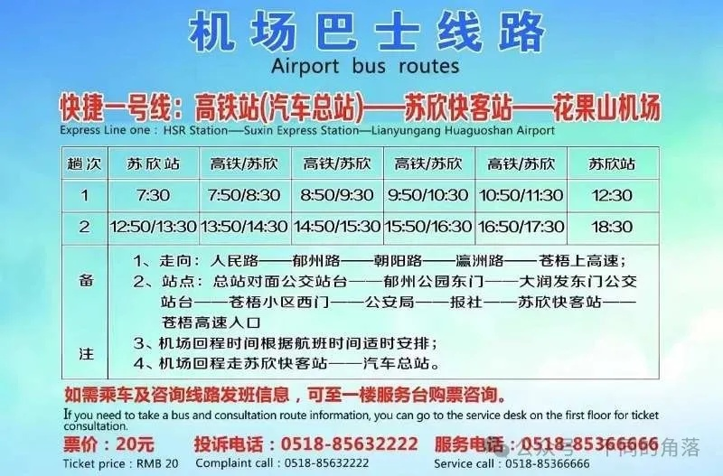
9、常州奔牛机场
A：市区机场巴士，目前有火车站北广场、通江路候机楼、武进汽车站、常州北站4条线路。
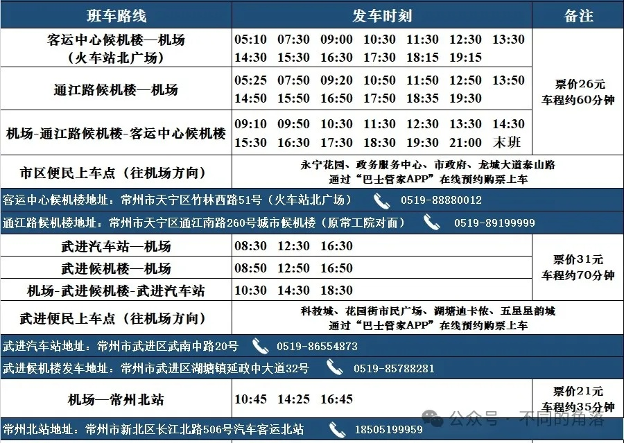
B：公交32路，票价3元。
咨询电话：0519-67896683。
火车站公交中心站→民航机场，
发车时间：6:30-17:00；
民航机场→火车站公交中心站，
发车时间：6:40-18:11。
C：城际班车，有发往镇江、丹阳、江阴、璜土、靖江线路。
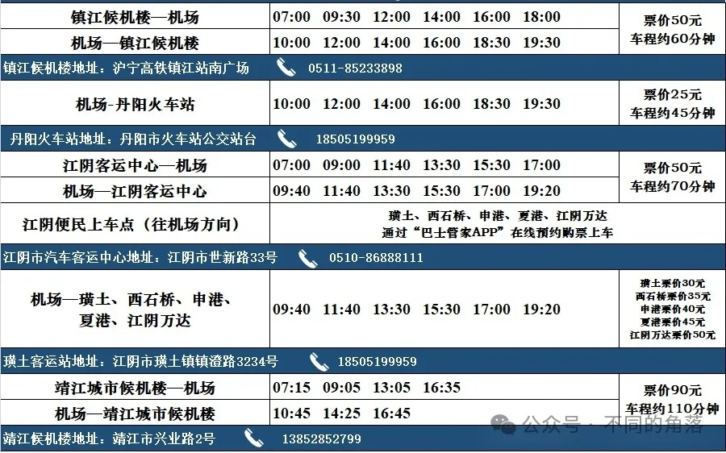
国内其它省市区机场交通：
01、北京+天津
02、上海交通
03、重庆交通
04、河北交通
05、山西交通
06、河南交通
07、辽宁交通
08、吉林交通
09、黑龙江交通
10、内蒙古交通
13、安徽交通
16、湖北交通
17、湖南交通
18、广东交通
19、广西交通
20、江西交通
21、四川交通
22、贵州交通
23、云南交通
24、西藏交通
25、海南交通
26、陕西交通
27、甘肃交通
28、宁夏交通
29、青海交通
30、新疆交通
更多的航空常识、酒店常识、酒店行业资讯、酒店集团、沈阳旅游、沙发客等相关内容可以到我的微信公众号里查看。